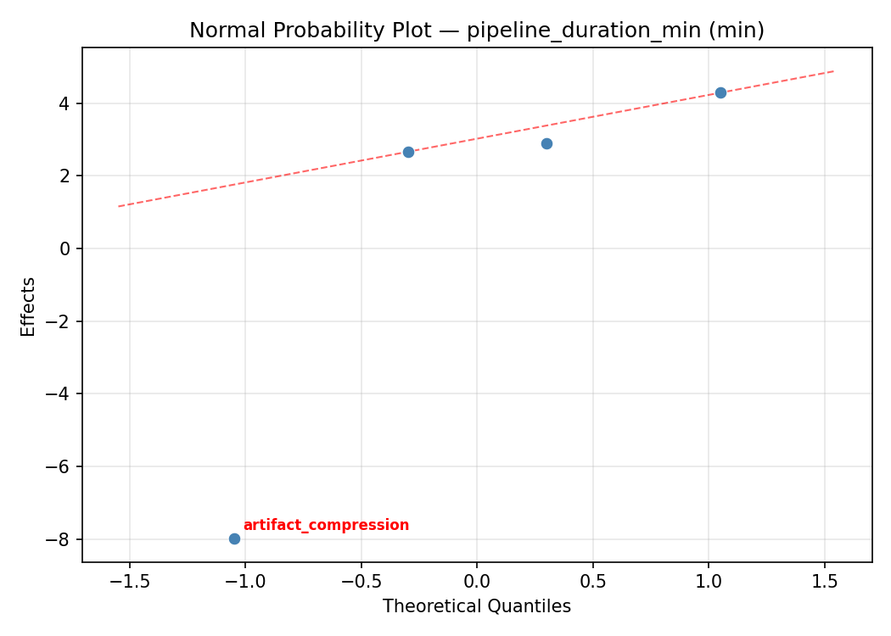
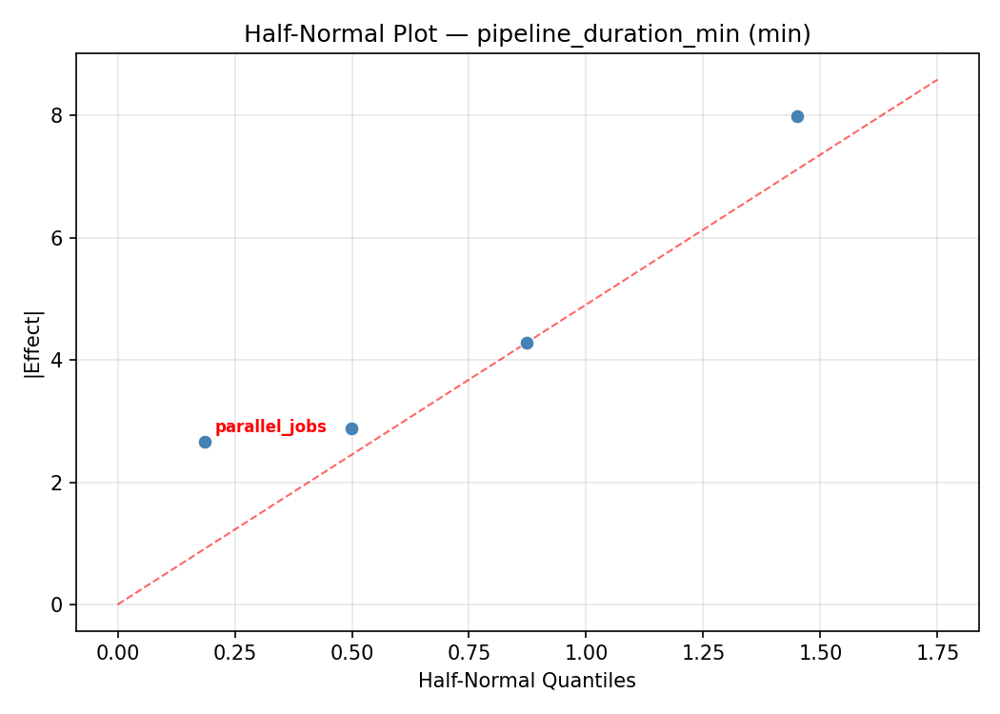
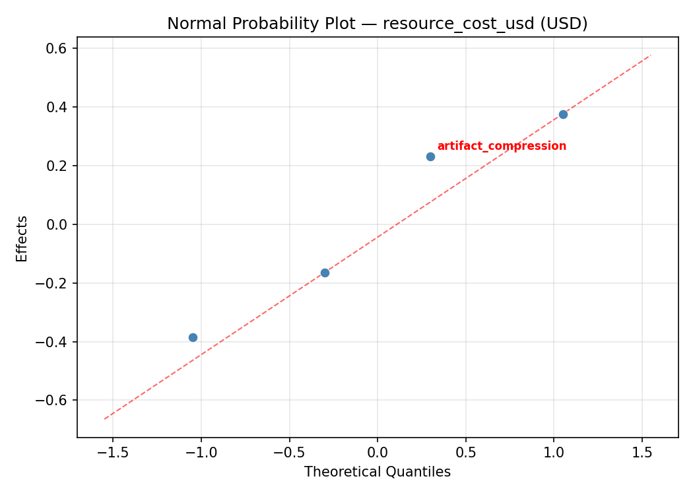
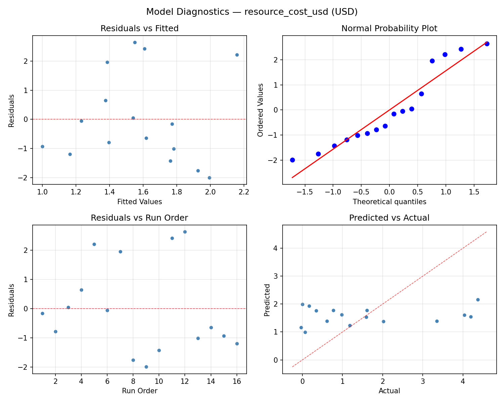

Summary
This experiment investigates ci/cd pipeline parallelism. Full factorial of parallel jobs, runner cores, cache strategy, and artifact compression for pipeline duration and cost.
The design varies 4 factors: parallel jobs (jobs), ranging from 1 to 8, runner cpu cores (cores), ranging from 2 to 8, cache strategy, ranging from none to aggressive, and artifact compression, ranging from off to on. The goal is to optimize 2 responses: pipeline duration min (min) (minimize) and resource cost usd (USD) (minimize). Fixed conditions held constant across all runs include ci platform = github_actions, repo size = medium.
A full factorial design was used to explore all 16 possible combinations of the 4 factors at two levels. This guarantees that every main effect and interaction can be estimated independently, at the cost of a larger experiment (16 runs).
Quadratic response surface models were fitted to capture potential curvature and factor interactions. The RSM contour plots below visualize how pairs of factors jointly affect each response.
Key Findings
For pipeline duration min, the most influential factors were runner cpu cores (38.9%), artifact compression (28.0%), parallel jobs (16.7%). The best observed value was 9.0 (at parallel jobs = 1, runner cpu cores = 8, cache strategy = none).
For resource cost usd, the most influential factors were parallel jobs (32.1%), runner cpu cores (31.7%), cache strategy (25.6%). The best observed value was -0.03 (at parallel jobs = 1, runner cpu cores = 8, cache strategy = none).
Recommended Next Steps
- Consider whether any fixed factors should be varied in a future study.
Experimental Setup
Factors
| Factor | Low | High | Unit |
|---|
parallel_jobs | 1 | 8 | jobs |
runner_cpu_cores | 2 | 8 | cores |
cache_strategy | none | aggressive | |
artifact_compression | off | on | |
Fixed: ci_platform = github_actions, repo_size = medium
Responses
| Response | Direction | Unit |
|---|
pipeline_duration_min | ↓ minimize | min |
resource_cost_usd | ↓ minimize | USD |
Configuration
{
"metadata": {
"name": "CI/CD Pipeline Parallelism",
"description": "Full factorial of parallel jobs, runner cores, cache strategy, and artifact compression for pipeline duration and cost"
},
"factors": [
{
"name": "parallel_jobs",
"levels": [
"1",
"8"
],
"type": "continuous",
"unit": "jobs"
},
{
"name": "runner_cpu_cores",
"levels": [
"2",
"8"
],
"type": "continuous",
"unit": "cores"
},
{
"name": "cache_strategy",
"levels": [
"none",
"aggressive"
],
"type": "categorical",
"unit": ""
},
{
"name": "artifact_compression",
"levels": [
"off",
"on"
],
"type": "categorical",
"unit": ""
}
],
"fixed_factors": {
"ci_platform": "github_actions",
"repo_size": "medium"
},
"responses": [
{
"name": "pipeline_duration_min",
"optimize": "minimize",
"unit": "min"
},
{
"name": "resource_cost_usd",
"optimize": "minimize",
"unit": "USD"
}
],
"settings": {
"operation": "full_factorial",
"test_script": "use_cases/77_cicd_pipeline_parallelism/sim.sh"
}
}
Experimental Matrix
The Full Factorial Design produces 16 runs. Each row is one experiment with specific factor settings.
| Run | parallel_jobs | runner_cpu_cores | cache_strategy | artifact_compression |
|---|
| 1 | 1 | 8 | aggressive | on |
| 2 | 8 | 2 | none | on |
| 3 | 1 | 8 | none | on |
| 4 | 1 | 8 | aggressive | off |
| 5 | 8 | 8 | aggressive | off |
| 6 | 8 | 2 | aggressive | off |
| 7 | 8 | 8 | none | off |
| 8 | 8 | 2 | none | off |
| 9 | 1 | 2 | none | on |
| 10 | 1 | 2 | aggressive | off |
| 11 | 8 | 8 | none | on |
| 12 | 8 | 8 | aggressive | on |
| 13 | 1 | 8 | none | off |
| 14 | 8 | 2 | aggressive | on |
| 15 | 1 | 2 | none | off |
| 16 | 1 | 2 | aggressive | on |
Step-by-Step Workflow
1
Preview the design
$ python doe.py info --config use_cases/77_cicd_pipeline_parallelism/config.json
2
Generate the runner script
$ python doe.py generate --config use_cases/77_cicd_pipeline_parallelism/config.json \
--output use_cases/77_cicd_pipeline_parallelism/results/run.sh --seed 42
3
Execute the experiments
$ bash use_cases/77_cicd_pipeline_parallelism/results/run.sh
4
Analyze results
$ python doe.py analyze --config use_cases/77_cicd_pipeline_parallelism/config.json
5
Get optimization recommendations
$ python doe.py optimize --config use_cases/77_cicd_pipeline_parallelism/config.json
6
Multi-objective optimization
With 2 competing responses, use --multi to find the best compromise via Derringer–Suich desirability.
$ python doe.py optimize --config use_cases/77_cicd_pipeline_parallelism/config.json --multi
7
Generate the HTML report
$ python doe.py report --config use_cases/77_cicd_pipeline_parallelism/config.json \
--output use_cases/77_cicd_pipeline_parallelism/results/report.html
Features Exercised
| Feature | Value |
|---|
| Design type | full_factorial |
| Factor types | continuous (2), categorical (2) |
| Arg style | double-dash |
| Responses | 2 (pipeline_duration_min ↓, resource_cost_usd ↓) |
| Total runs | 16 |
Analysis Results
Generated from actual experiment runs using the DOE Helper Tool.
Response: pipeline_duration_min
Top factors: runner_cpu_cores (38.9%), artifact_compression (28.0%), parallel_jobs (16.7%).
ANOVA
| Source | DF | SS | MS | F | p-value |
|---|
| Source | DF | SS | MS | F | p-value |
| parallel_jobs | 1 | 88.8306 | 88.8306 | 3.569 | 0.1175 |
| runner_cpu_cores | 1 | 480.7056 | 480.7056 | 19.312 | 0.0071 |
| cache_strategy | 1 | 86.0256 | 86.0256 | 3.456 | 0.1221 |
| artifact_compression | 1 | 248.8506 | 248.8506 | 9.997 | 0.0250 |
| parallel_jobs*runner_cpu_cores | 1 | 0.1406 | 0.1406 | 0.006 | 0.9430 |
| parallel_jobs*cache_strategy | 1 | 25.2506 | 25.2506 | 1.014 | 0.3601 |
| parallel_jobs*artifact_compression | 1 | 100.5006 | 100.5006 | 4.038 | 0.1007 |
| runner_cpu_cores*cache_strategy | 1 | 56.6256 | 56.6256 | 2.275 | 0.1919 |
| runner_cpu_cores*artifact_compression | 1 | 700.9256 | 700.9256 | 28.159 | 0.0032 |
| cache_strategy*artifact_compression | 1 | 222.7556 | 222.7556 | 8.949 | 0.0304 |
| Error | 5 | 124.4581 | 24.8916 | | |
| Total | 15 | 2135.0694 | 142.3380 | | |
Pareto Chart

Main Effects Plot

Normal Probability Plot of Effects

Half-Normal Plot of Effects

Model Diagnostics

Response: resource_cost_usd
Top factors: parallel_jobs (32.1%), runner_cpu_cores (31.7%), cache_strategy (25.6%).
ANOVA
| Source | DF | SS | MS | F | p-value |
|---|
| Source | DF | SS | MS | F | p-value |
| parallel_jobs | 1 | 1.4221 | 1.4221 | 1.483 | 0.2776 |
| runner_cpu_cores | 1 | 1.3865 | 1.3865 | 1.446 | 0.2830 |
| cache_strategy | 1 | 0.9073 | 0.9073 | 0.946 | 0.3753 |
| artifact_compression | 1 | 0.1580 | 0.1580 | 0.165 | 0.7015 |
| parallel_jobs*runner_cpu_cores | 1 | 0.0001 | 0.0001 | 0.000 | 0.9942 |
| parallel_jobs*cache_strategy | 1 | 3.5250 | 3.5250 | 3.677 | 0.1133 |
| parallel_jobs*artifact_compression | 1 | 4.2128 | 4.2128 | 4.395 | 0.0902 |
| runner_cpu_cores*cache_strategy | 1 | 0.0663 | 0.0663 | 0.069 | 0.8030 |
| runner_cpu_cores*artifact_compression | 1 | 8.0231 | 8.0231 | 8.369 | 0.0341 |
| cache_strategy*artifact_compression | 1 | 12.4433 | 12.4433 | 12.980 | 0.0155 |
| Error | 5 | 4.7932 | 0.9586 | | |
| Total | 15 | 36.9374 | 2.4625 | | |
Pareto Chart

Main Effects Plot

Normal Probability Plot of Effects

Half-Normal Plot of Effects

Model Diagnostics

Response Surface Plots
3D surfaces fitted with quadratic RSM. Red dots are observed data points.
pipeline duration min parallel jobs vs runner cpu cores

resource cost usd parallel jobs vs runner cpu cores

Multi-Objective Optimization
When responses compete, Derringer–Suich desirability finds the best compromise.
Each response is scaled to a 0–1 desirability, then combined via a weighted geometric mean.
Overall Desirability
D = 0.8014
Per-Response Desirability
| Response | Weight | Desirability | Predicted | Dir |
|---|
pipeline_duration_min |
1.5 |
|
14.10 0.8406 14.10 min |
↓ |
resource_cost_usd |
1.0 |
|
0.98 0.7459 0.98 USD |
↓ |
Recommended Settings
| Factor | Value |
|---|
parallel_jobs | 8 jobs |
runner_cpu_cores | 8 cores |
cache_strategy | aggressive |
artifact_compression | on |
Source: from observed run #14
Trade-off Summary
Sacrifice = how much worse than single-objective best.
| Response | Predicted | Best Observed | Sacrifice |
|---|
resource_cost_usd | 0.98 | -0.03 | +1.01 |
Top 3 Runs by Desirability
| Run | D | Factor Settings |
|---|
| #6 | 0.7031 | parallel_jobs=1, runner_cpu_cores=8, cache_strategy=none, artifact_compression=off |
| #2 | 0.5994 | parallel_jobs=1, runner_cpu_cores=8, cache_strategy=aggressive, artifact_compression=off |
Model Quality
| Response | R² | Type |
|---|
resource_cost_usd | 0.1756 | linear |
Full Multi-Objective Output
============================================================
MULTI-OBJECTIVE OPTIMIZATION
Method: Derringer-Suich Desirability Function
============================================================
Overall desirability: D = 0.8014
Response Weight Desirability Predicted Direction
---------------------------------------------------------------------
pipeline_duration_min 1.5 0.8406 14.10 min ↓
resource_cost_usd 1.0 0.7459 0.98 USD ↓
Recommended settings:
parallel_jobs = 8 jobs
runner_cpu_cores = 8 cores
cache_strategy = aggressive
artifact_compression = on
(from observed run #14)
Trade-off summary:
pipeline_duration_min: 14.10 (best observed: 9.00, sacrifice: +5.10)
resource_cost_usd: 0.98 (best observed: -0.03, sacrifice: +1.01)
Model quality:
pipeline_duration_min: R² = 0.2508 (linear)
resource_cost_usd: R² = 0.1756 (linear)
Top 3 observed runs by overall desirability:
1. Run #14 (D=0.8014): parallel_jobs=8, runner_cpu_cores=8, cache_strategy=aggressive, artifact_compression=on
2. Run #6 (D=0.7031): parallel_jobs=1, runner_cpu_cores=8, cache_strategy=none, artifact_compression=off
3. Run #2 (D=0.5994): parallel_jobs=1, runner_cpu_cores=8, cache_strategy=aggressive, artifact_compression=off
Full Analysis Output
=== Main Effects: pipeline_duration_min ===
Factor Effect Std Error % Contribution
--------------------------------------------------------------
runner_cpu_cores -10.9625 2.9826 38.9%
artifact_compression 7.8875 2.9826 28.0%
parallel_jobs 4.7125 2.9826 16.7%
cache_strategy -4.6375 2.9826 16.4%
=== ANOVA Table: pipeline_duration_min ===
Source DF SS MS F p-value
-----------------------------------------------------------------------------
parallel_jobs 1 88.8306 88.8306 3.569 0.1175
runner_cpu_cores 1 480.7056 480.7056 19.312 0.0071
cache_strategy 1 86.0256 86.0256 3.456 0.1221
artifact_compression 1 248.8506 248.8506 9.997 0.0250
parallel_jobs*runner_cpu_cores 1 0.1406 0.1406 0.006 0.9430
parallel_jobs*cache_strategy 1 25.2506 25.2506 1.014 0.3601
parallel_jobs*artifact_compression 1 100.5006 100.5006 4.038 0.1007
runner_cpu_cores*cache_strategy 1 56.6256 56.6256 2.275 0.1919
runner_cpu_cores*artifact_compression 1 700.9256 700.9256 28.159 0.0032
cache_strategy*artifact_compression 1 222.7556 222.7556 8.949 0.0304
Error 5 124.4581 24.8916
Total 15 2135.0694 142.3380
=== Interaction Effects: pipeline_duration_min ===
Factor A Factor B Interaction % Contribution
------------------------------------------------------------------------
runner_cpu_cores artifact_compression 13.2375 41.1%
cache_strategy artifact_compression 7.4625 23.2%
parallel_jobs artifact_compression 5.0125 15.6%
runner_cpu_cores cache_strategy 3.7625 11.7%
parallel_jobs cache_strategy -2.5125 7.8%
parallel_jobs runner_cpu_cores -0.1875 0.6%
=== Summary Statistics: pipeline_duration_min ===
parallel_jobs:
Level N Mean Std Min Max
------------------------------------------------------------
1 8 27.1375 12.7630 9.0000 49.7000
8 8 31.8500 11.3765 10.4000 42.6000
runner_cpu_cores:
Level N Mean Std Min Max
------------------------------------------------------------
2 8 34.9750 9.3031 22.1000 49.7000
8 8 24.0125 12.2389 9.0000 37.9000
cache_strategy:
Level N Mean Std Min Max
------------------------------------------------------------
aggressive 8 31.8125 12.7225 14.1000 49.7000
none 8 27.1750 11.4394 9.0000 37.9000
artifact_compression:
Level N Mean Std Min Max
------------------------------------------------------------
off 8 25.5500 14.9044 9.0000 49.7000
on 8 33.4375 6.8789 22.1000 42.6000
=== Main Effects: resource_cost_usd ===
Factor Effect Std Error % Contribution
--------------------------------------------------------------
parallel_jobs -0.5963 0.3923 32.1%
runner_cpu_cores 0.5888 0.3923 31.7%
cache_strategy 0.4763 0.3923 25.6%
artifact_compression -0.1987 0.3923 10.7%
=== ANOVA Table: resource_cost_usd ===
Source DF SS MS F p-value
-----------------------------------------------------------------------------
parallel_jobs 1 1.4221 1.4221 1.483 0.2776
runner_cpu_cores 1 1.3865 1.3865 1.446 0.2830
cache_strategy 1 0.9073 0.9073 0.946 0.3753
artifact_compression 1 0.1580 0.1580 0.165 0.7015
parallel_jobs*runner_cpu_cores 1 0.0001 0.0001 0.000 0.9942
parallel_jobs*cache_strategy 1 3.5250 3.5250 3.677 0.1133
parallel_jobs*artifact_compression 1 4.2128 4.2128 4.395 0.0902
runner_cpu_cores*cache_strategy 1 0.0663 0.0663 0.069 0.8030
runner_cpu_cores*artifact_compression 1 8.0231 8.0231 8.369 0.0341
cache_strategy*artifact_compression 1 12.4433 12.4433 12.980 0.0155
Error 5 4.7932 0.9586
Total 15 36.9374 2.4625
=== Interaction Effects: resource_cost_usd ===
Factor A Factor B Interaction % Contribution
------------------------------------------------------------------------
cache_strategy artifact_compression -1.7637 33.4%
runner_cpu_cores artifact_compression -1.4162 26.8%
parallel_jobs artifact_compression -1.0262 19.4%
parallel_jobs cache_strategy 0.9387 17.8%
runner_cpu_cores cache_strategy 0.1288 2.4%
parallel_jobs runner_cpu_cores -0.0037 0.1%
=== Summary Statistics: resource_cost_usd ===
parallel_jobs:
Level N Mean Std Min Max
------------------------------------------------------------
1 8 1.8763 1.7244 0.0700 4.1900
8 8 1.2800 1.4491 -0.0300 4.3700
runner_cpu_cores:
Level N Mean Std Min Max
------------------------------------------------------------
2 8 1.2837 1.3496 0.0000 4.0300
8 8 1.8725 1.8048 -0.0300 4.3700
cache_strategy:
Level N Mean Std Min Max
------------------------------------------------------------
aggressive 8 1.3400 1.5196 0.0000 4.0300
none 8 1.8163 1.6846 -0.0300 4.3700
artifact_compression:
Level N Mean Std Min Max
------------------------------------------------------------
off 8 1.6775 1.7300 0.0000 4.3700
on 8 1.4788 1.5037 -0.0300 4.0300
Optimization Recommendations
=== Optimization: pipeline_duration_min ===
Direction: minimize
Best observed run: #12
parallel_jobs = 1
runner_cpu_cores = 8
cache_strategy = none
artifact_compression = off
Value: 9.0
RSM Model (linear, R² = 0.2684, Adj R² = 0.0024):
Coefficients:
intercept +29.4938
parallel_jobs +3.3938
runner_cpu_cores +2.2563
cache_strategy -4.3562
artifact_compression +0.4813
RSM Model (quadratic, R² = 0.4966, Adj R² = -6.5505):
Coefficients:
intercept +5.8988
parallel_jobs +3.3938
runner_cpu_cores +2.2562
cache_strategy -4.3563
artifact_compression +0.4812
parallel_jobs*runner_cpu_cores +0.6813
parallel_jobs*cache_strategy +1.8938
parallel_jobs*artifact_compression +0.9063
runner_cpu_cores*cache_strategy +0.5312
runner_cpu_cores*artifact_compression -3.1063
cache_strategy*artifact_compression +3.9563
parallel_jobs^2 +5.8988
runner_cpu_cores^2 +5.8988
cache_strategy^2 +5.8988
artifact_compression^2 +5.8988
Curvature analysis:
parallel_jobs coef=+5.8988 convex (has a minimum)
runner_cpu_cores coef=+5.8988 convex (has a minimum)
cache_strategy coef=+5.8988 convex (has a minimum)
artifact_compression coef=+5.8988 convex (has a minimum)
Notable interactions:
cache_strategy*artifact_compression coef=+3.9563 (synergistic)
runner_cpu_cores*artifact_compression coef=-3.1063 (antagonistic)
parallel_jobs*cache_strategy coef=+1.8938 (synergistic)
parallel_jobs*artifact_compression coef=+0.9063 (synergistic)
parallel_jobs*runner_cpu_cores coef=+0.6813 (synergistic)
runner_cpu_cores*cache_strategy coef=+0.5312 (synergistic)
Predicted optimum (from linear model, at observed points):
parallel_jobs = 8
runner_cpu_cores = 8
cache_strategy = aggressive
artifact_compression = on
Predicted value: 39.9813
Surface optimum (via L-BFGS-B, linear model):
parallel_jobs = 1
runner_cpu_cores = 2
cache_strategy = aggressive
artifact_compression = off
Predicted value: 19.0063
Model quality: Weak fit — consider adding center points or using a different design.
Factor importance:
1. cache_strategy (effect: -8.7, contribution: 41.5%)
2. parallel_jobs (effect: 6.8, contribution: 32.4%)
3. runner_cpu_cores (effect: 4.5, contribution: 21.5%)
4. artifact_compression (effect: 1.0, contribution: 4.6%)
=== Optimization: resource_cost_usd ===
Direction: minimize
Best observed run: #16
parallel_jobs = 1
runner_cpu_cores = 8
cache_strategy = none
artifact_compression = on
Value: -0.03
RSM Model (linear, R² = 0.4298, Adj R² = 0.2224):
Coefficients:
intercept +1.5781
parallel_jobs -0.3969
runner_cpu_cores -0.4306
cache_strategy +0.7844
artifact_compression -0.1844
RSM Model (quadratic, R² = 0.7274, Adj R² = -3.0897):
Coefficients:
intercept +0.3156
parallel_jobs -0.3969
runner_cpu_cores -0.4306
cache_strategy +0.7844
artifact_compression -0.1844
parallel_jobs*runner_cpu_cores +0.2419
parallel_jobs*cache_strategy -0.3806
parallel_jobs*artifact_compression +0.0406
runner_cpu_cores*cache_strategy -0.2969
runner_cpu_cores*artifact_compression +0.0744
cache_strategy*artifact_compression -0.6231
parallel_jobs^2 +0.3156
runner_cpu_cores^2 +0.3156
cache_strategy^2 +0.3156
artifact_compression^2 +0.3156
Curvature analysis:
parallel_jobs coef=+0.3156 convex (has a minimum)
runner_cpu_cores coef=+0.3156 convex (has a minimum)
cache_strategy coef=+0.3156 convex (has a minimum)
artifact_compression coef=+0.3156 convex (has a minimum)
Notable interactions:
cache_strategy*artifact_compression coef=-0.6231 (antagonistic)
parallel_jobs*cache_strategy coef=-0.3806 (antagonistic)
Predicted optimum (from linear model, at observed points):
parallel_jobs = 1
runner_cpu_cores = 2
cache_strategy = none
artifact_compression = off
Predicted value: 3.3744
Surface optimum (via L-BFGS-B, linear model):
parallel_jobs = 8
runner_cpu_cores = 8
cache_strategy = none
artifact_compression = on
Predicted value: -0.2181
Model quality: Weak fit — consider adding center points or using a different design.
Factor importance:
1. cache_strategy (effect: 1.6, contribution: 43.7%)
2. runner_cpu_cores (effect: -0.9, contribution: 24.0%)
3. parallel_jobs (effect: -0.8, contribution: 22.1%)
4. artifact_compression (effect: -0.4, contribution: 10.3%)